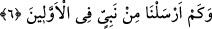
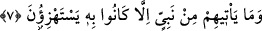

ve İslam kuvvetli hâle geldi.
Bu îzahta şuna işâret edilmektedir: İsyân ve günahta müdâvim olup çoğu zaman haddi
aşan kimselerden bugün hitâbını kesmeyen zat, yarın kıyâmette, dünyadayken îman ve
iyilikte kusur etmeyen, günahlara bulaşacak olsa bile irfânına bozukluk girmeyen
kimselerden mağfiret, ihsan, lutuf ve iyiliklerini nasıl men eder ki?
Şâir der ki:
Her ne kadar meyhanenin kapıcılığını çok yaptıysam da,
Allah’ın lutfundan ümid kesmedim, cenneti arzulamaktayım.
Hâce Abdullah Ensârî (Herevî) münâcâtında şöyle demiştir; Allahım o kadar
büyüksün ki kuldan lâyık olmayan bir davranış görüyorsun da cezalandırma husûsunda
acele etmiyorsun. Kuldan küfür işitiyorsun da onun rızkını elinden almıyorsun. Sevap ve
affını ona sunuyor, kendi mesaj ve sözünü ona yeniden hatırlatıyor, eğer hatasından
dönerse mağfiret edeceğini; “eğer vazgeçerlerse geçmiş günahları bağışlanır” (el-
Enfâl, 8/38) sözünü veriyorsun.
Şâir ne güzel söyler:
Kötü işli düşmana karşı bile muâmelesi böyleyse,
Ne söyleyim, kim bilir iyi işli dosta muamelesi nasıldır?
Sen düşmanlarını bile böyle gözetirken,
Dostlarını nasıl mahrum bırakırsın?”
6. Daha önceki milletlere nice peygamberler göndermiştik.
Âyet şu mânâyı ifâde etmektedir: “Biz evvelki ümmetler de geçmiş asırlarda birçok
peygamber gönderdik.”
7. Onlar, kendilerine gelen her peygamberi mutlaka alaya alırlardı.
Onlara hiçbir peygamber gelmemiştir ki, onu yalanlamamış ve alay etmemiş olsunlar.
Yani kendilerini hak dine dâvet eden peygamberlere karşı ümmetlerinin âdeti, onları
yalanlayıp onlarla alay etmektir. Öyle ise (Habîbim!) Kavminin seni tekzîb edip alay
etmesinden rahatsız olmamalısın. Çünkü belâ ve musîbet genel olursa hafifler.